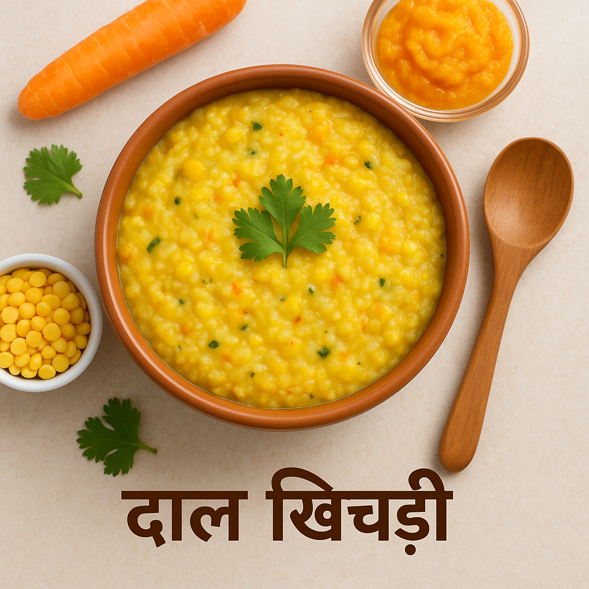
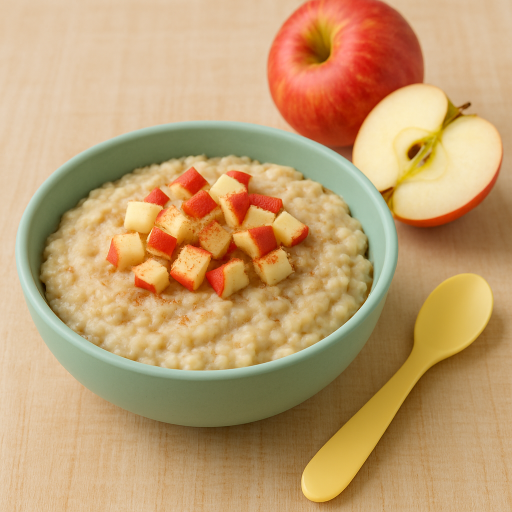
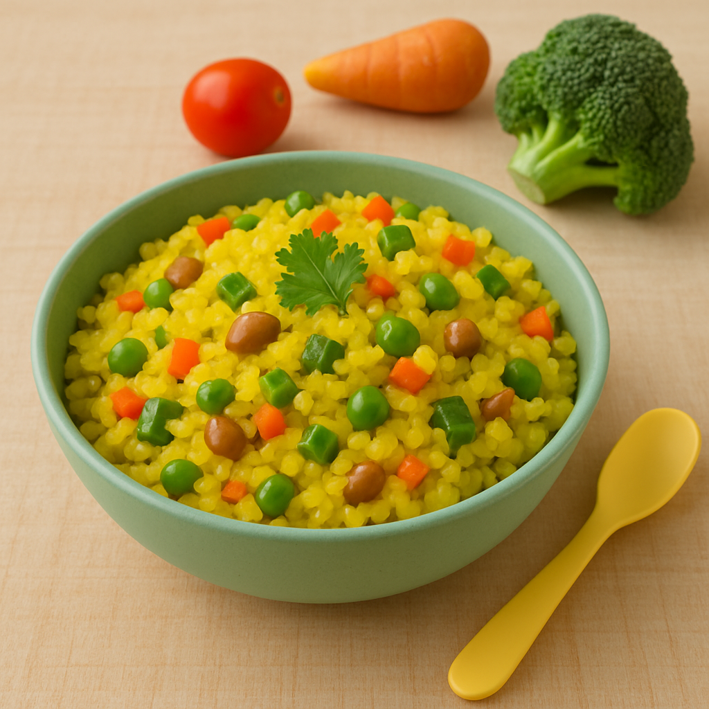
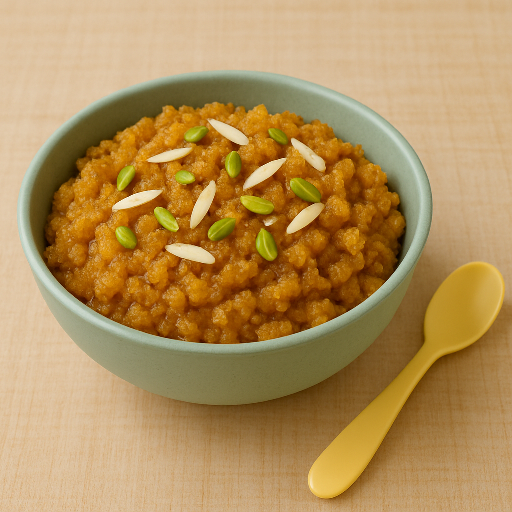

8-15 महीने के बच्चों के लिए 5 बेस्ट इंडियन बेबी फूड रेसिपी
पौष्टिक, स्वादिष्ट और आसान घर पर बनने वाले भारतीय शिशु आहार
जब आपका बच्चा 8-15 महीने का होता है, तो उसे ठोस आहार की शुरुआत करनी चाहिए। यहाँ 5 आसान और पौष्टिक भारतीय बेबी फूड रेसिपी दी गई हैं जो आपके बच्चे को पसंद आएंगी और उसके विकास में मदद करेंगी।

1. दाल खिचड़ी
सामग्री
- 1/4 कप चावल
- 1/4 कप मूंग दाल
- 1 कप पानी
- 1/2 छोटा चम्मच घी
- 1/4 छोटा चम्मच हल्दी
- 1 छोटा चम्मच गाजर (कद्दूकस की हुई)
बनाने की विधि
- चावल और दाल को अच्छी तरह धोकर 15 मिनट के लिए भिगो दें।
- प्रेशर कुकर में घी गर्म करें, हल्दी डालें और गाजर को हल्का सा भूनें।
- भीगे हुए चावल-दाल डालकर 1 कप पानी मिलाएँ।
- 3-4 सीटी आने तक पकाएँ और मसलकर बच्चे को परोसें।
टिप्स
पहली बार में पतली खिचड़ी बनाएँ। धीरे-धीरे गाढ़ी बनाएँ और सब्जियाँ बढ़ाएँ।

2. सेब दलिया
सामग्री
- 2 बड़े चम्मच दलिया (गेहूँ या सूजी)
- 1/2 कप दूध (माँ का दूध/फॉर्मूला)
- 1/2 सेब (छिलका उतारकर कद्दूकस किया हुआ)
- 1 छोटा चम्मच घी
बनाने की विधि
- कढ़ाही में घी गर्म करके दलिया को हल्का भूनें।
- दूध और 1/4 कप पानी डालकर मध्यम आँच पर पकाएँ।
- जब दलिया नरम हो जाए, तो कद्दूकस किया हुआ सेब मिलाएँ।
- 2 मिनट और पकाकर गुनगुना परोसें।
टिप्स
सेब की जगह केला या पपीता भी मिला सकते हैं।

3. वेजिटेबल पोहा
सामग्री
- 1/2 कप पोहा (मोटा)
- 1 छोटा चम्मच घी
- 1/4 छोटा चम्मच जीरा
- 1 बड़ा चम्मच गाजर (कद्दूकस की हुई)
- 1 बड़ा चम्मच पालक (बारीक कटी हुई)
- 1/4 छोटा चम्मच हल्दी
बनाने की विधि
- पोहा को धोकर 5 मिनट के लिए भिगो दें और पानी निथार लें।
- कढ़ाही में घी गर्म करके जीरा और हल्दी डालें।
- गाजर और पालक डालकर 2 मिनट भूनें।
- पोहा डालकर 3-4 मिनट पकाएँ और मसलकर परोसें।
टिप्स
बच्चे को पहली बार पोहा देते समय बिना मसाले का सादा पोहा दें।

4. मूंग दल हलवा
सामग्री
- 1/4 कप मूंग दल (पीली)
- 1 कप दूध
- 1 छोटा चम्मच घी
- 1 छोटा चम्मच गुड़ (पाउडर)
- 1/4 छोटा चम्मच इलायची पाउडर
बनाने की विधि
- दल को 2 घंटे भिगोकर पीस लें (पेस्ट बनाएँ)।
- कढ़ाही में घी गर्म करके दल का पेस्ट डालें और भूनें।
- दूध धीरे-धीरे डालकर लगातार चलाते रहें।
- गाढ़ा होने पर गुड़ और इलायची मिलाएँ और 2 मिनट पकाएँ।
- थोड़ा ठंडा करके परोसें।
टिप्स
12 महीने से कम उम्र के बच्चों को गुड़ न दें, इसकी जगह केला मिला सकते हैं।

5. रागी पोरिज
सामग्री
- 2 बड़े चम्मच रागी पाउडर
- 1 कप पानी
- 1/2 कप दूध (माँ का दूध/फॉर्मूला)
- 1 छोटा चम्मच गुड़ (वैकल्पिक)
बनाने की विधि
- रागी पाउडर को 1/4 कप पानी में घोल लें (गांठें न बनें)।
- बाकी पानी उबालें और रागी मिश्रण धीरे-धीरे डालें।
- लगातार चलाते हुए 5-7 मिनट पकाएँ।
- गैस बंद करके दूध मिलाएँ (और गुड़ अगर देना हो)।
- गुनगुना होने पर परोसें।
टिप्स
पहली बार थोड़ी मात्रा में दें क्योंकि रागी भारी होती है।
बेबी केयर प्लानर टूल आज़माएं
अपने बच्चे की उम्र और वजन के हिसाब से पर्सनलाइज्ड मील प्लान जनरेट करें!